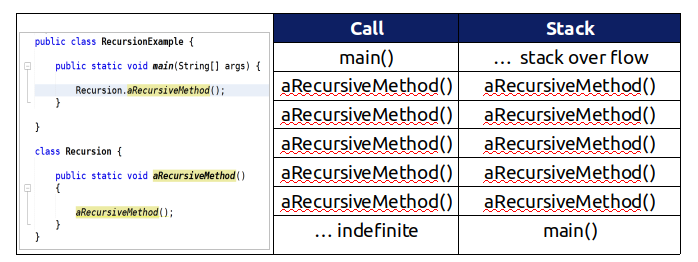
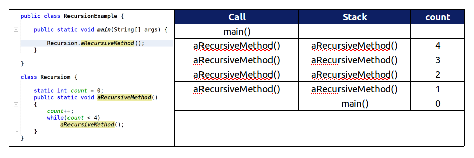

Recursion is a basic programming technique you can use in Java,
in which a method calls itself to solve some problem.
A method that uses this technique is recursive.
Many programming problems can be solved only by recursion,
and some problems that can be solved by other techniques are
better solved by recursion.
The video below illustrates how recursion can be applied to solve a problem.
Skill 28.2 Implement a recursive method
Skill 28.2 Concepts
Before we write a recursive method, let's revisit how method calls are stored in memory.
Consider the example depicted below. In this example, the main method is the first method called,
and it is the first method placed on the stack. Once inside the main method, we call aRecursiveMethod()
and this method is placed on the stack. Inside aRecursiveMethod(), we call aRecursiveMethod() again,
and it too is placed on the stack. Notice that, because aRecursiveMethod() calls aRecursiveMethod(),
there is no end to the program. Eventually, you will incure a stackOverflow error, because
there is only so such much memory.

Avoiding a stackOverflow error requireds a base case. A base case
is a condition, that once met, stops the recursive call process.
In our example, we will create a new variable count. Each time aRecursiveMethod() is called,
we will increment count. The calls to aRecursiveMethod() will end once the count reaches 4.

Skill 28.3 Interpret the call stack
Skill 28.3 Concepts
In Java the call stack keeps track of the methods that you have called since the main method executes.
A stack is a way of organizing data that adds and removes items only from the top of the stack.
An example is a stack of cups. You can grap a cup from the top of the stack or add more cups
at the top of the stack.
When you are executing one method (method a) and it calls another method (method b)
the method call is placed on the call stack along with information about where it was called from,
which tells the run-time where to return to when the current method finishes executing.
Once method b finishes executing, the run-time pops method b off of the call stack and
returns execution to the next line to be executed in method a.
Consider the example below.
The code below will cause a run-time error of division by zero when it runs.
The main method calls the method test1 (at line 20) which calls the method test2 (at line 6)
which has the divide by zero error (line 14). This can be seen in the call stack shown below
which shows the call stack from the top (most recent method called) to the bottom (first method called).
When a program calls a function, that function goes on top of the call stack. This similar to a stack of books. You add things one at a time.
Then, when you are ready to take something off, you always take off the top item.
Recursive functions add to the call stack until a base case is met. Once the base condition is met, the method calls "pop" off the stack.
This concept is further illustrated in the video below.
The above illustrates a simple example of recursion. The next two examples, illustrate how to interpret binary recursion and
head and tail recursion.